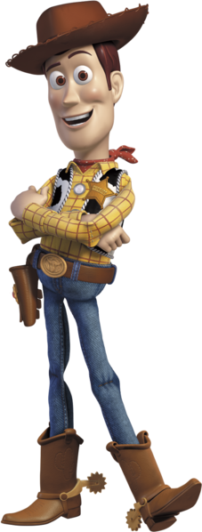
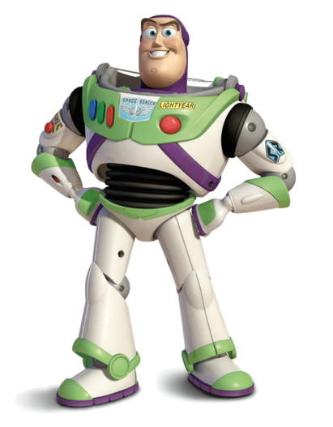

(Вуди)
Изначально главным героем «Истории игрушек» должен был быть Тинни, персонаж из мультфильма «Оловянная игрушка», а шериф Вуди — злой куклой чревовещателя. Он был бы главным злодеем и унижал бы другие игрушки, пока они не сплотились бы против него...

(Баз)
Создатель персонажа Джон Лассетер пояснил, что дизайн Базза Лайтера создавался под влиянием астронавтов Аполлона (космической программы США по освоению Луны), в частности, их шлемов, белых костюмов и устройств связи...